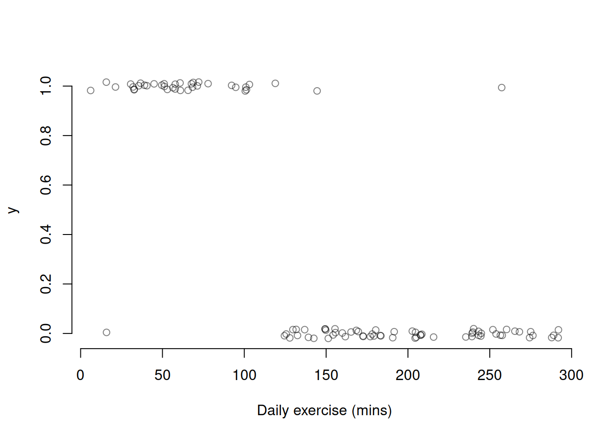
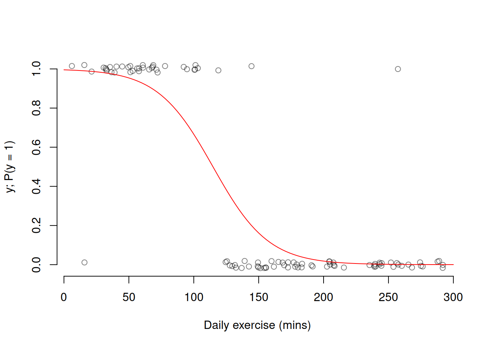
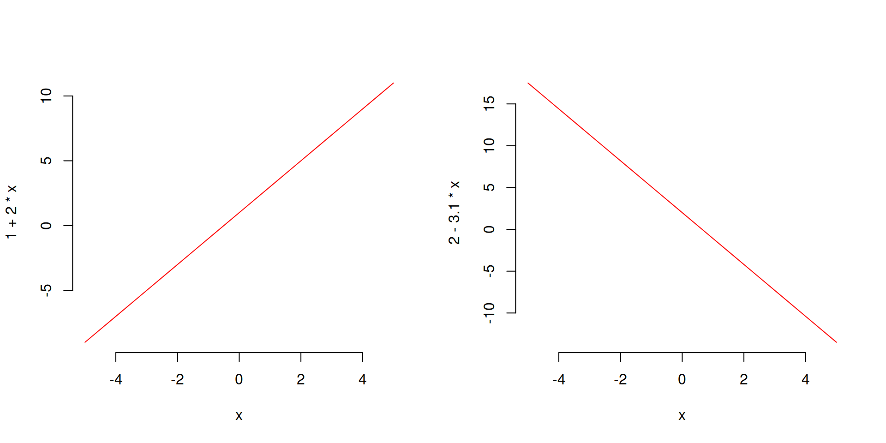
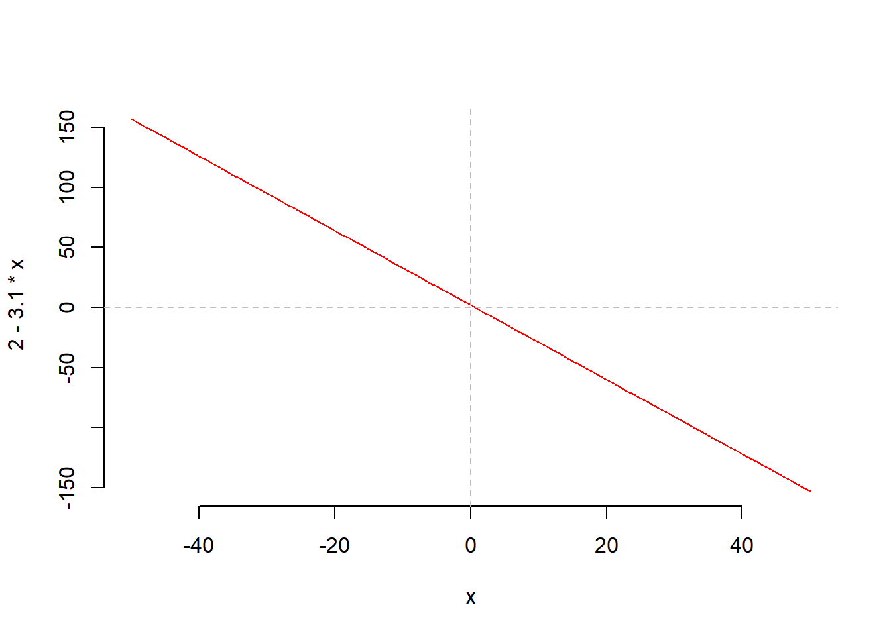
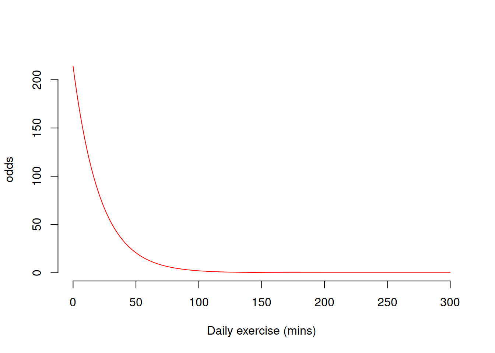
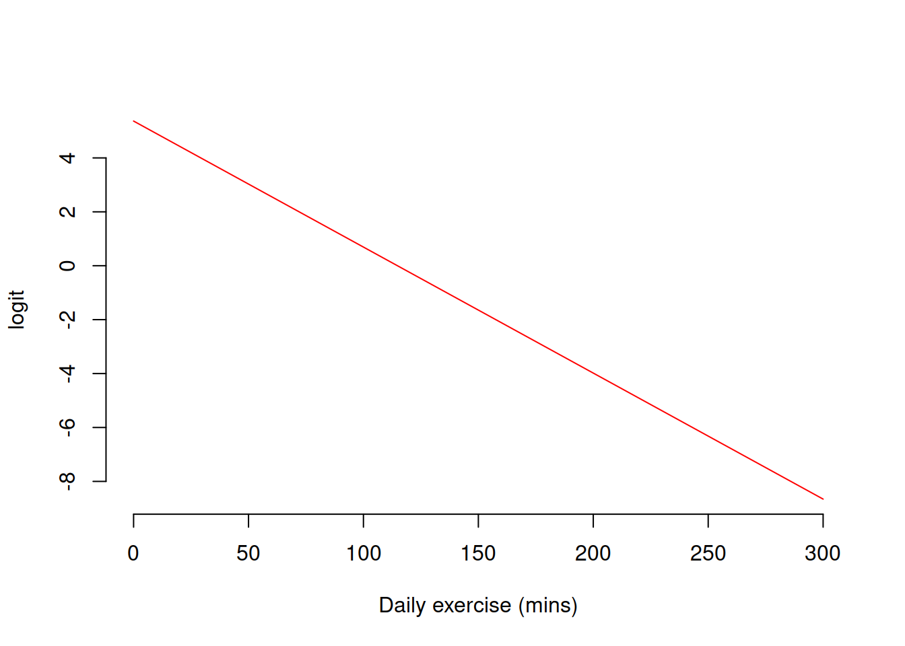

From P to Logit
Introduction
This short guide aims to explain the steps required to go from binary 0/1 data to a logistic regression model.
Consider a variable \(y\) which can only take one of two possible values: \(0\) or \(1\). Typically, people use \(0\) to represent “failure” and \(1\) to represent “success”, where “success” stands for the phenomenon of interest.
We are interested in studying the probability of observing a success, i.e. \(\Pr(y = 1)\), which we can denote in short as \(p\):
\[ p = \Pr(y = 1) \]
Recall that a probability must simultaneously satisfy the following conditions:
- \(p \geq 0\), i.e. probabilities cannot be negative
- \(p \leq 1\), i.e. probabilities cannot be larger than 1 (= 100%)
- The total probability must be 1: \(\Pr(y = 1) + \Pr(y = 0) = p + (1 - p) = 1\)
In plain English, 0 represents the probability of an impossible event (an event that can never happen) and 1 the probability of a certain event (one that will happen for sure). The final condition says that the probability that \(y\) will take either of its possible values (0 or 1) is 1.
Modelling probabilities
Consider the following hypothetical data, representing 100 individuals on which was measured the amount of daily exercise (in minutes) and whether or not they suffer from severe anxiety. If they suffered from severe anxiety, \(y = 1\), and \(y = 0\) otherwise. In the plot below the \(y\) values are jittered (i.e., they have some random noise added) to avoid overplotting.

As you can see, among the 100 individuals most of those having roughly 120 minutes of daily exercise do not suffer from severe anxiety. The cutoff of 120 minutes seems to capture most of those individuals, but some are not well represented by the rule:
- daily exercise > 120 minutes ==> predict y = 1
- daily exercise < 120 minutes ==> predict y = 0
In fact, there are a couple of people with severe anxiety who exercise more than 120 minutes, and one that doesn’t suffer from severe anxiety but exercises less than 120 minutes.
If we were to imagine a curve describing the probability of suffering from severe anxiety \(p = \Pr(y = 1)\) as a function of daily exercise, we could imagine having a pretty high chance of suffering from severe anxiety when there are lots of 1s, and a very low chance of suffering from severe anxiety where there are lots of 0s.
When daily exercise is low, roughly below 90, there are pretty much all 1s so the probability of a suffering from severe anxiety is high. As we move along, the probability of observing a 1 stats to decrease between 90 and 150 as the 1s and 0s start mixing. Then, after 150 mins there are pretty much all 0s, and so the chance of suffering from severe anxiety is almost 0.
We can imagine how that probability could follow a trend similar to the red line below:

As we can see, probabilities do not follow linear trends as they depend on the number of 1s or 0s in a given place. The more 1s, the higher the chance of a 1 outcome, and vice versa.
Linear predictions
In linear regression, we used a function of the form \[ b_0 + b_1 x \] to obtain predictions for specific \(x\) values.
Example lines of that form are:

Imagine to have a line of that form, with estimated intercept \(b_0 = 2\) and slope \(b_1 = -3.1\). You can observe the following predictions:
# estimated coefficients
b0 <- 2
b1 <- -3.1# when x = 50
b0 + b1 * (50)## [1] -153\[ x = 50 \qquad \text{prediction = } b_0 + b_1 * x = -153 \]
# when x = -24
b0 + b1 * (-24)## [1] 76.4\[ x = -24 \qquad \text{prediction = } b_0 + b_1 * x = 76.4 \]
As you can see, a linear model of the form \(b_0 + b_1 * x\) can lead to predictions that are below 0 or greater than 1.
This already violates two requirements of a probability: a probability cannot be negative, and a probability cannot exceed 1.
Secondly, a line is suitable to model linear relationships between variables. Let’s plot the above line for \(x\) going from -50 to + 50:

We recall, however, that probabilities do not follow linear trends and depend on how many 1s and 0s appear in a given region. The more the 1s observed, the higher the chance \(p\) of observing a success.
A probability varies between 0 and 1. However, the linear model \(b_0 + b_1 x\) can return values ranging from \(-\infty\) to \(+\infty\), i.e. negative and positive values. Clearly, we cannot use \(b_0 + b_1 x\) to directly predict \(p\), or we would obtain negative probabilities or probabilities that exceed 1. We need to transform \(p\) to become a value also ranging from \(-\infty\) to \(\infty\), and then we can use the linear model to predict the transformed probability.
Step 1: Compute the odds of success
If \(p = \Pr(y = 1)\) denotes the probability of a success, the odds of success are defined as the ratio between the probability of success and its complement to 1:
\[ \text{odds} = \frac{p}{1 - p} = \frac{\Pr(y = 1)}{\Pr(y = 0)} = \frac{\Pr(\text{success})}{\Pr(\text{failure})} \]
It can be interpreted as a ratio telling us how likely is success in relation to failure. If the odds were 2, we would say that success is two times more likely than failure. In fact,
\[ 2 = \frac{\Pr(\text{success})}{\Pr(\text{failure})} \qquad \text{implies} \qquad \Pr(\text{success}) = 2 \Pr(\text{failure}) \]
If odds = 1, success is as likely as failure. If odds = 0.5, failure is two times more likely than success.
Let’s now study the possible values of the odds. To do so, let’s consider the value of the odds when the probability is equal to its two limit values, 0 and 1, in turn.
When \(p = 0\): \[ \text{odds} = \frac{p}{1-p} = \frac{0}{1} = 0 \]
When \(p = 1\): \[ \text{odds} = \frac{p}{1-p} = \frac{1}{0} = +\infty \]
Hence, odds vary from 0 to \(\infty\).
We managed to transform \(p\) to \(\text{odds}\), obtaining a value that ranges from 0 to \(\infty\).

Step 2: Compute the logit = log odds of success
Having a value that can take any value bigger than 0 is not enough; the line can also predict negative values. We will transform the odds to make them vary from \(-\infty\) to \(\infty\).
Let’s consider the log function, and use
\[ \text{logit} = \log(\text{odds}) \]
Let’s see the possible values that the logit can take by studying the minimum and maximum possible values of the odds.
- When odds = 0:
log(0)## [1] -Inf\[ \text{logit} = \log(\text{odds}) = \log(0) = -\infty \]
- When odds = \(\infty\):
log(Inf)## [1] Inf\[ \text{logit} = \log(\text{odds}) = \log(\infty) = \infty \]
A logit varies from \(-\infty\) to \(\infty\).
We managed to go from something that varies between 0 and 1 (the probability \(p\)) to something that varies between \(0\) and \(\infty\) (the odds), and finally to something that varies from \(-\infty\) to \(\infty\) (the logit = log odds). Now we have something that can be linked to the linear model predictions.

Step 3: Link the logit and the linear model
We found that the logit varies from \(-\infty\) to \(\infty\), and as such we can now use the linear model to predict the logit.
You can write it either as:
\[ \begin{aligned} \text{logit} &= b_0 + b_1 x \\ \log(\text{odds}) &= b_0 + b_1 x \\ \log\left(\frac{p}{1-p}\right) &= b_0 + b_1 x \end{aligned} \]
all mean the same thing.
Essentials of logarithms
A logarithm is a mathematical way to write any positive number as a power of a “base number”.
Log base 10
Consider the base number 10. The R function implementing the logarithm base 10 is log10().
- To what power do I need to raise the base number 10 in order to obtain the desired number 100?
x <- 100 # 100 = 10^2
x## [1] 100pow <- log10(x)
pow## [1] 2log10(100) = 2 as we need to raise 10 to the power of 2 in order to obtain the desired number 100.
- To what power do I need to raise the base number 10 in order to obtain the desired number 1000?
x <- 1000 # 1000 = 10^3
x## [1] 1000pow <- log10(x)
pow## [1] 3log10(1000) = 3 as we need to raise 10 to the power of 3 in order to obtain the desired number 1000.
Note that you can use this to write any desired number as a power of 10. For example, to which power do we raise 10 in order to obtain 13.5?
x <- 13.5
x## [1] 13.5pow <- log10(x)
pow## [1] 1.13In fact, 10^1.130334 = 13.5 (up to rounding error)
10^pow## [1] 13.5An important property is that:
\[10^{\log_{10}(x)} = x\]
For example, \(10^{\log_{10}(100)} = 10^{2} = 100\).
10^log10(100)## [1] 100Log base e (aka natural logarithm)
A special number in mathematics is Euler’s (or Napier’s) number \(e = 2.718282\). As well as a logarithm in base 10, telling us which power to raise the base 10 to, in order to obtain a desired number, we can also use any other bases such as \(e\).
In R, you obtain Euler’s number as follows:
e <- exp(1) # obtain the e number
e## [1] 2.72The logarithm with base number \(e\) is implemented in the R function log().
- To which number do I need to raise \(e\) in order to obtain 8?
x <- 8
x## [1] 8pow <- log(8)
pow## [1] 2.08e^pow## [1] 8Up to rounding error, you see that you get 8 back.
To not have rounding errors, save the full result:
pow <- log(8)
e^pow## [1] 8An important property is that:
\[e^{\log(x)} = x\]
e^log(8)## [1] 8
This workbook was written by Josiah King, Umberto Noe, and Martin Corley, and is licensed under a Creative Commons Attribution 4.0 International License.